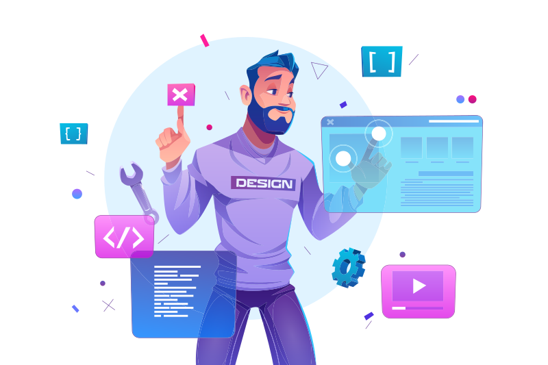

Адаптивные отзывчивые веб-сайты
любой сложности

Обо мне
Привет! Меня зовут Александр, мне 27 лет и я из прекрасного города Санкт-Петербург.
Чем я занимаюсь:
- верстка сайтов как многостраничных, так и лэндингов, промо-страниц, email-рассылок;
- адаптивная, отзывчивая, резиновая, кроссбраузерная верстка, которая идеально смотрится на всех устройствах (от мобилок, до компьютеров);
- могу доработать и исправить чужую верстку;
- натягиваю верстку на WordPress.